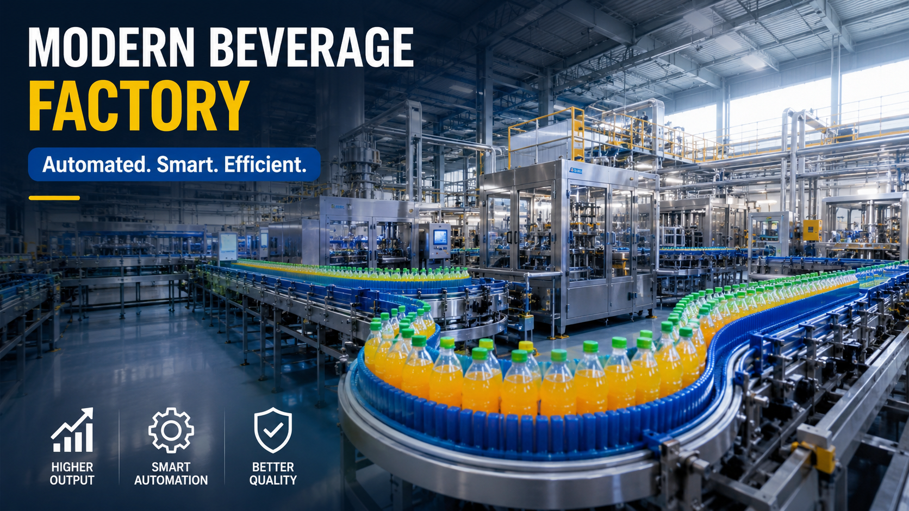

How to Build a Modern Beverage Factory with an Automated Production Line

Summary
The global beverage industry is rapidly evolving. Consumers are demanding more choices, higher quality, faster delivery, and safer products. For investors and manufacturers, building a modern beverage factory is no longer simply about purchasing individual machines. It requires a complete production strategy that combines factory planning, automation technology, production efficiency, quality control, and future scalability.
A successful beverage manufacturing plant needs to consider multiple factors before production begins:
→ Market positioning
→ Product categories
→ Production capacity
→ Factory layout
→ Automation level
→ Production workflow
→ Quality management
→ Future expansion capability
This article explains how to build a modern automated beverage factory from a project planning perspective, including production line design, smart manufacturing concepts, ROI considerations, and how integrated automation helps manufacturers achieve long-term competitiveness.
Technology
- Smart Beverage Factory Automation Technology
- A modern beverage factory is not defined by one machine. It is an integrated manufacturing ecosystem combining production equipment
- automation control
- logistics systems
- and digital management.
- Key technologies include:
- → Automated Beverage Production Line
- A complete beverage production system can integrate:
- PET bottle manufacturing
- Bottle handling
- Filling system
- Capping system
- Labeling system
- Packaging system
- Warehouse logistics
- The goal is to create a continuous production flow from raw material input to finished product output.
- → Smart Factory Integration
- Modern beverage factories increasingly adopt:
- PLC automation control
- Production monitoring systems
- MES manufacturing execution systems
- Automated material handling
- Warehouse automation
- These technologies help manufacturers improve production visibility and operational efficiency.
- → Flexible Manufacturing Capability
- A future-ready beverage factory should support multiple products:
- Bottled water
- Juice drinks
- Functional beverages
- Energy drinks
- Sports drinks
- Dairy beverages
- Flexible production design allows manufacturers to respond quickly to changing market demands.
Challenge
Building a Competitive Beverage Factory in a Changing Market
The beverage manufacturing industry is becoming increasingly competitive.
Factories are facing several challenges:
1. Increasing Market Competition
Consumers today expect:
More product choices
Better quality
Faster product availability
More customized beverage options
Manufacturers must build flexible production capabilities rather than relying on traditional mass production models.
2. Rising Labor Costs
Many manufacturing regions are experiencing:
Increasing labor costs
Difficulty recruiting production workers
Higher dependence on skilled operators
Manual production models are becoming less competitive.
3. Quality and Food Safety Requirements
Modern beverage manufacturers must achieve:
Stable product quality
Production traceability
Consistent filling accuracy
Reliable packaging performance
This requires more than experienced workers. It requires controlled and automated production systems.
4. Factory Expansion Challenges
Many companies struggle when scaling production because their original factory design was not prepared for:
Higher production capacity
Additional product categories
Automation upgrades
Digital management
A modern beverage factory must be designed for future growth.
Solution
Designing a Complete Automated Beverage Manufacturing System
The solution is not simply selecting equipment.
The correct approach is designing the entire manufacturing system according to:
Product requirements
Production capacity
Factory space
Investment budget
Future expansion goals
Step 1: Define Factory Production Goals
Before selecting equipment, manufacturers should clarify:
Target output per hour
Bottle size
Beverage category
Packaging format
Expected market demand
Example:
A bottled water factory may require different production planning compared with a functional beverage factory.
Step 2: Design the Complete Production Workflow
A modern beverage production line typically includes:
Raw Material
↓
PET Preform
↓
Bottle Manufacturing
↓
Filling
↓
Capping
↓
Labeling
↓
Packaging
↓
Warehouse Storage
↓
Distribution
Step 3: Integrate Automation
Automation connects every production stage.
Benefits:
Reduced manual handling
Higher production stability
Better production efficiency
Easier management
Step 4: Prepare Future Expansion
A professional factory design should allow integration of:
Additional production lines
Automated warehouse systems
Robotics
Digital factory management
Workflow & Layout
Complete Beverage Factory Production Workflow
A modern automated beverage factory normally follows this process:
PET Preform Storage
↓
Preform Handling System
↓
Bottle Blow Molding
↓
Bottle Transfer System
↓
Filling Process
↓
Capping Process
↓
Labeling
↓
Secondary Packaging
↓
Palletizing
↓
Automated Warehouse
↓
Finished Product Distribution
Factory Layout Considerations
A professional beverage factory layout should optimize:
Material Flow
Reduce unnecessary transportation distance.
Production Efficiency
Ensure smooth connection between each process.
Hygiene Management
Separate clean production areas from logistics areas.
Future Expansion
Reserve space for:
Additional equipment
Automation upgrades
Warehouse expansion
Results & ROI
- Why Automated Beverage Factories Deliver Better Long-Term Returns
- Investment in automation should be evaluated through long-term business value.
- 1. Reduced Labor Dependency:
- Automation reduces repetitive manual operations.
- Benefits:
- Lower labor cost
- Less operator dependency
- Improved production stability
- 2. Higher Production Output:
- Automated systems provide:
- Continuous operation
- Faster production cycles
- Reduced downtime
- 3. Better Product Quality:
- Automation improves:
- Filling consistency
- Packaging accuracy
- Production repeatability
- 4. Lower Operational Waste:
- Better process control helps reduce
- Material waste
- Production errors
- Product losses
- 5. Higher Factory Scalability:
- A well-designed automated factory can expand easier when market demand increases.
Equipment List
- A complete beverage production project may include:
- → Bottle Manufacturing System:
- PET preform handling system
- Stretch blow molding machine
- Bottle transportation system
- → Beverage Processing System:
- Water treatment system
- Mixing system
- Sterilization system
- Beverage processing equipment
- → Filling & Packaging System:
- Filling machine
- Capping machine
- Labeling machine
- Packaging machine
- → Factory Automation System:
- PLC control system
- Production monitoring system
- MES integration
- → Logistics Automation:
- Conveyor system
- Robot palletizing
- AGV transportation
- ASRS warehouse system
Project Overview / Opening
Building the Next Generation Beverage Factory
The beverage industry is moving from traditional production models toward highly automated smart manufacturing systems.
For investors and manufacturers, the biggest challenge is not purchasing equipment.
The real challenge is creating a complete production ecosystem where every process works together:
Production
Quality control
Packaging
Logistics
Data management
A modern beverage factory must be designed as a complete project rather than a collection of separate machines.
Key Points
- Key Factors for Building a Modern Beverage Factory
- 1. Start With Factory Planning
- Understand:
- Market demand
- Production capacity
- Product categories
- before equipment selection.
- 2. Choose the Right Automation Level
- Different factories require different solutions:
- Semi automation
- Full automation
- Smart factory integration
- 3. Focus on Complete Workflow
- The best production results come from integrated systems, not individual machines.
- 4. Consider Future Expansion
- A successful factory today should support tomorrow's growth.
- 5. Select the Right Project Partner
- A reliable partner should provide:
- Engineering support
- Supplier coordination
- System integration
- Project delivery management
Implementation / Workflow
From Factory Concept to Production Delivery
A complete beverage factory project usually follows:
Phase 1: Requirement Analysis
Analyze:
Product type
Production capacity
Factory conditions
Investment target
Phase 2: Factory Planning
Develop:
Production workflow
Equipment configuration
Factory layout
Phase 3: Supplier Selection
Evaluate:
Technical capability
Manufacturing experience
Project execution ability
Phase 4: Equipment Integration
Coordinate:
Mechanical design
Electrical systems
Automation control
Phase 5: Testing & Delivery
Complete:
Factory acceptance testing
Installation support
Production commissioning
Customer Value / Results
For beverage investors and manufacturers, a properly designed automated production system provides:
Faster Factory Startup
Professional project planning reduces implementation risks.
Lower Long-Term Operating Costs
Automation reduces dependence on labor and improves efficiency.
Stable Product Quality
Standardized production processes create consistent products.
Better Market Response
Flexible production allows manufacturers to introduce new products faster.
Sustainable Business Growth
A smart beverage factory creates a foundation for future expansion.
Conclusion / Next Step
Building a modern beverage factory requires more than purchasing production equipment. It requires a complete understanding of manufacturing processes, automation technology, factory planning, supplier coordination, and project execution.
By combining China's strong manufacturing ecosystem with professional project integration capabilities, manufacturers can build reliable, efficient, and scalable beverage production systems.
We help manufacturers worldwide design, source, integrate, and deliver industrial automation projects from China's manufacturing ecosystem.
Our capabilities include:
Beverage production line automation
Filling and packaging systems
Smart factory solutions
Industrial automation integration
Automated warehouse systems
Complete manufacturing project coordination
Whether you are planning a new beverage factory, expanding production capacity, or upgrading an existing plant, our team can support your project from initial concept design to final delivery.
📩 Visit our Contact page and submit your project requirements to discuss your beverage factory automation solution.
SEO Title
How to Build a Modern Beverage Factory with an Automated Production Line
SEO Description
The global beverage industry is rapidly evolving. Consumers are demanding more choices, higher quality, faster delivery, and safer products. For investors and manufacturers, building a modern beverage factory is no longer simply about purchasing individual machines. It requires a complete production strategy that combines factory planning, automation technology, production efficiency, quality control, and future scalability.
A successful beverage manufacturing plant needs to consider multiple factors before production begins:
→ Market positioning
→ Product categories
→ Production capacity
→ Factory layout
→ Automation level
→ Production workflow
→ Quality management
→ Future expansion capability
This article explains how to build a modern automated beverage factory from a project planning perspective, including production line design, smart manufacturing concepts, ROI considerations, and how integrated automation helps manufacturers achieve long-term competitiveness.
Related Blog
Start with Your Business Challenge
Tell us about your warehouse, factory, or production requirements. We'll help you explore practical automation solutions and relevant project references.